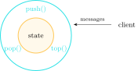

Definition
Object-oriented programming organises a program around objects: values with an identity, a state (attributes, fields) and a behaviour (methods). A class describes a family of objects and is at the same time a module and a type. Its defining traits:
- explicit connection between functions and data;
- encapsulation (see information hiding): the state is reached only through the methods;
- inheritance: a class defined as an extension of another;
- polymorphism with dynamic binding: code written for a base type runs on every subtype;
- emphasis on the representation of the domain rather than on the sequence of operations.
Why: programming in the large
Programming in the small is about functions and algorithms. Programming in the large is about many people and long lives: division of the work, maintainability, robustness. The software quality factors that object orientation acts on are
- external: extensibility (adding behaviour with local changes) and reusability;
- internal: structure, modularity, readability.
Function-oriented design methods (functional, control-flow, data-flow diagrams) gave way to object-oriented ones (Booch, OOSE, OMT), merged into UML.
Picture

The state sits inside, reachable only through the methods on the boundary.
C++ and Java
C++ adds classes to C and keeps value semantics, pointers, manual memory and multiple inheritance; its design rules are zero-overhead abstraction, a direct map to hardware and stability. Java removes pointers and manual memory, adds a garbage collector and a single-rooted class hierarchy (Object), and replaces multiple inheritance of classes with interfaces.
Intuition
An object is a small machine with buttons. Users press buttons; only the machine knows what is inside. Changing the inside without changing the buttons breaks nobody.
Pitfall
Classes are not automatically objects-oriented design: a class with public fields and getters/setters for everything is a C struct with extra steps.